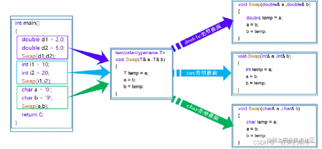

笔记¶
时间：2015/1/23
算法部分¶
1、三数之和¶
题目来源：https://leetcode.cn/problems/3sum/
简单描述：寻找数组中的三个元素，这三个元素之和满足target，并且不重复。
思路：
双指针算法，将数组排序，然后有一层循环，循环数组元素，定义一个nums[left]和nums[right]，left=i+1，然后对后续数组进行快慢指针查询符合目标的值。直到循环结束为止。
如果right的值之和大于目标，则移动right，否则移动left，最后值之和符合条件。
代码：
class Solution {
public:
vector<vector<int>> threeSum(vector<int>& nums) {
vector<vector<int>> result;
sort(nums.begin(), nums.end());
// 找出a + b + c = 0
// a = nums[i], b = nums[left], c = nums[right]
for (int i = 0; i < nums.size(); i++) {
// 排序之后如果第一个元素已经大于零，那么无论如何组合都不可能凑成三元组，直接返回结果就可以了
if (nums[i] > 0) {
return result;
}
// 错误去重a方法，将会漏掉-1,-1,2 这种情况
/*
if (nums[i] == nums[i + 1]) {
continue;
}
*/
// 正确去重a方法
if (i > 0 && nums[i] == nums[i - 1]) {
continue;
}
int left = i + 1;
int right = nums.size() - 1;
while (right > left) {
// 去重复逻辑如果放在这里，0，0，0 的情况，可能直接导致 right<=left 了，从而漏掉了 0,0,0 这种三元组
/*
while (right > left && nums[right] == nums[right - 1]) right--;
while (right > left && nums[left] == nums[left + 1]) left++;
*/
if (nums[i] + nums[left] + nums[right] > 0) right--;
else if (nums[i] + nums[left] + nums[right] < 0) left++;
else {
result.push_back(vector<int>{nums[i], nums[left], nums[right]});
// 去重逻辑应该放在找到一个三元组之后，对b 和 c去重
while (right > left && nums[right] == nums[right - 1]) right--;
while (right > left && nums[left] == nums[left + 1]) left++;
// 找到答案时，双指针同时收缩
right--;
left++;
}
}
}
return result;
}
};
2、四数之和¶
题目来源：https://leetcode.cn/problems/4sum/
简单描述：寻找四个元素，判断是否满足target。
思路：
包含n个元素，创建两个循环，一个i,一个j，j是i之后的元素，然后寻找后两个元素仍然使用双指针，然后循环判断。
class Solution {
public:
vector<vector<int>> fourSum(vector<int>& nums, int target) {
vector<vector<int>> result;
sort(nums.begin(), nums.end());
for (int k = 0; k < nums.size(); k++) {
// 剪枝处理
if (nums[k] > target && nums[k] >= 0) {
break; // 这里使用break，统一通过最后的return返回
}
// 对nums[k]去重
if (k > 0 && nums[k] == nums[k - 1]) {
continue;
}
for (int i = k + 1; i < nums.size(); i++) {
// 2级剪枝处理
if (nums[k] + nums[i] > target && nums[k] + nums[i] >= 0) {
break;
}
// 对nums[i]去重
if (i > k + 1 && nums[i] == nums[i - 1]) {
continue;
}
int left = i + 1;
int right = nums.size() - 1;
while (right > left) {
// nums[k] + nums[i] + nums[left] + nums[right] > target 会溢出
if ((long) nums[k] + nums[i] + nums[left] + nums[right] > target) {
right--;
// nums[k] + nums[i] + nums[left] + nums[right] < target 会溢出
} else if ((long) nums[k] + nums[i] + nums[left] + nums[right] < target) {
left++;
} else {
result.push_back(vector<int>{nums[k], nums[i], nums[left], nums[right]});
// 对nums[left]和nums[right]去重
while (right > left && nums[right] == nums[right - 1]) right--;
while (right > left && nums[left] == nums[left + 1]) left++;
// 找到答案时，双指针同时收缩
right--;
left++;
}
}
}
}
return result;
}
};
c++部分¶
1、c++模板¶
c++模板，语法template
模板：泛型编程，主要是可以通过用一个通用编程来实现对各种类型的对象的处理和操作。
把原本特定于某个类型的算法或类当中的类型信息抽调，抽出来做成模板参数T。
用于提高代码复用性。
函数模板：
//T代表的是一种类型
//也可以用class来代替typename
template<typename T1,typename T2,…,typename Tn>
返回类型 函数名(参数列表)
{
//函数体
}
函数模板是一个蓝图，本身并不是函数，只有编译器执行的时候才会调用对应类型，。
注：我踩过的坑，在编写模板类的文件的时候，在main.cpp中，我们使用对应的文件，不能#include"xxx.h"，只能#include"xxx.cpp"因为我们在使用模板类文件的时候，要导入h文件，只能支持确定类型的文件，然后模板文件不算是一个确定的文件，只是一个框架，无法直接使用，只能直接使用cpp文件，从而在编译的时候直接链接到cpp文件中。
模板不支持把声明写到.h ，定义写到.cpp这种声明和定义分开的方式，会报链接错误
不过我们可以仍然可以这样写，只需要调用cpp文件即可。

在编译器编译阶段，对于函数模板的使用，编译器需要根据传入的实参类型来推演生成对应类型的函数以供调用，彼此的地址也是不同的。
在实例化的时候我们可以使用隐式和显式实例化，隐式实例化就是自动推导类型，显式实例化就是直接指定模板参数。
类模板¶
非类型模板参数¶
模板参数可分为类型形参和非类型形参。
//T是类型模板参数--一般使用整型
//N是非类型模板参数，N是一个常量
template<class T,size_t N>
class Stack
{
private:
T _a[N];
size_t top;
};
int main()
{
Stack<int,10> sk1;//10
Stack<int,1000> sk2;//1000
//这样通过控制Stack<int,m> 中的m（m必须是常量）值可以实现多个大小不同的栈
return 0;
}
非类型模板参数只能使用整型家族。其他类型不能使用！
2、c++共享指针和unique_ptr，weak_ptr¶
此部分阅读cPP接口网即可
https://en.cppreference.com/w/cpp/memory/shared_ptr
还有一个细节就是shared_ptr别名构造函数，共享对象的引用计数，但是指向第二个参数的地址。
3、c++容器，dequeue¶
前置后置++，前置++，要返回对于对象的引用&,return *this，因为this是一个指针，其实就是地址，*获取的是this指针的对象，毕竟我们++之后获取的是对象，而非对象的指针，哈哈，我之前一直不理解。后置++的时候要注意参数(int)之类的东西，因为后置运算符是用于标识的，在调用的时候编译器自动传递一个0作为int参数，没啥用处，记住就行
class UPInt { // "unlimited precision int"
public:
UPInt& operator++(); // ++ 前缀
const UPInt operator++(int); // ++ 后缀
UPInt& operator--(); // -- 前缀
const UPInt operator--(int); // -- 后缀
UPInt& operator+=(int); // += 操作符，UPInts
// 与ints 相运算
...
};
UPInt i;
++i; // 调用 i.operator++();
i++; // 调用 i.operator++(0);
--i; // 调用 i.operator--();
i--; // 调用 i.operator--(0);
c++感觉好像会自动将返回值赋给i这个对象，即在后台会默认执行=这个赋值操作，不然按理来说应该有一个对象来接受i.operator++();的返回类型值才对。
代码：
myDeque.h
#ifndef MYQUEUE
#define MYQUEUE
#pragma once
#include<iostream>
#include <stdexcept>
#include<iterator>
/*****************************************************************************
* @brief : myDeque class declare
* @author : davely
* @email : ly_shenlongbaiwei@163.com
* @file : myDeque.h
* @date : 2025/1/5 20:46
* @version : ver 1.0
*****************************************************************************/
template <typename T>
class myDeque
{
//私有变量
private:
T* buffer; //内部缓冲区
size_t capacity;//缓冲区容量
size_t front_idx;//头部索引
size_t back_idx;//尾部索引
size_t count;//当前元素数量
//调整容量,allocater，内存分配器
void resize(size_t new_capacity);
public:
//构造函数
myDeque(size_t initial_capacity = 8);
//析构函数
~myDeque();
//复制构造函数和赋值运算符.
myDeque(const myDeque& other) ;
myDeque& operator=(const myDeque& other);
//判断当前队列是否为空
bool empty() const;
//获取大小
size_t size()const;
//在队前插入元素
void push_front(const T&value);
//在尾部插入元素
void push_back(const T& value);
//获取前端元素
T& front();
const T& front() const;
//获取尾端元素
T& back();
const T& back() const;
//从前面删除元素
void pop_front();
//从后面删除元素
void pop_back();
//嵌套的迭代器类定义
class Iterator {
private:
myDeque<T>* deque_ptr;
size_t index;
size_t pos;
public:
using iterator_category = std::bidirectional_iterator_tag;
using value_type = T;
using difference_type=std::ptrdiff_t;
using pointer = T*;
using reference = T&;
Iterator(myDeque<T>* deque, size_t position) :deque_ptr(deque), pos(position) {}
//解引用操作
reference operator*() const {
size_t real_idx = (deque_ptr->front_idx + pos) % deque_ptr->capacity;
//
return deque_ptr->buffer[real_idx];
}
pointer operator->() const {
size_t real_idx = (deque_ptr->front_idx + pos) % deque_ptr->capacity;
return &(deque_ptr->buffer[real_idx]);
}
//前置递增++x
Iterator& operator++() {
++pos;
return *this;
}
//后置递增x++
Iterator operator++(int) {
Iterator temp = *this;
++pos;
return temp;
}
//前置递减
Iterator& operator--(){
--pos;
return *this;
}
//后置递减
Iterator operator--(int) {
Iterator temp = *this;
--pos;
return temp;
}
//比较操作
bool operator==(const myDeque<value_type>::Iterator& other) const {
return (deque_ptr == other.deque_ptr) && (pos == other.pos);
}
bool operator!=(const myDeque<value_type>::Iterator& other) const {
return !(*this == other);
}
};
//获取begin迭代器
Iterator begin() {
return Iterator(this, 0);
}
//获取end迭代器
Iterator end() {
return Iterator(this, count);
}
};
//template<typename T>
//inline myDeque<T>::Iterator::reference myDeque<T>::Iterator::operator*() const
//{
// size_t real_idx = (deque_ptr->front_idx + pos);
//
// return deque_ptr->buffer[real_idx];
//}
//
//template<typename T>
//inline myDeque<T>::Iterator::pointer myDeque<T>::Iterator::operator->() const
//{
// size_t real_idx = (deque_ptr->front_idx + pos);
// return &(deque_ptr->buffer[real_idx]);
//}
#endif
myDeque.cpp
#include "myDeque.h"
/*****************************************************************************
* @brief : myDeque's define
* @author : davely
* @email : ly_shenlongbaiwei@163.com
* @file : myDeque.cpp
* @date : 2025/1/5 21:52
* @version : ver 1.0
*****************************************************************************/
template<typename T>
void myDeque<T>::resize(size_t new_capacity)
{
T* new_buffer = new T[new_capacity];
//重新将原内存元素存储到新的内存空间
for (size_t i = 0; i < count; i++) {
new_buffer[i] = buffer[(front_idx + i)%capacity];
}
delete[] buffer;
buffer = new_buffer;
capacity = new_capacity;
front_idx = 0;
back_idx = count;
}
template<typename T>
myDeque<T>::myDeque(size_t initial_capacity) :front_idx(0), back_idx(0), count(0), capacity(initial_capacity)
{
buffer = new T[initial_capacity];
}
template<typename T>
myDeque<T>::~myDeque()
{
delete[] buffer;
}
template<typename T>
myDeque<T>::myDeque(const myDeque& other) :capacity(other.capacity), front_idx(other.front_idx), back_idx(other.back_idx), count(other.count)
{
T* new_buff = new T[capacity];
for (size_t i = 0; i < count; i++) {
new_buff[(front_idx + i)%other.capacity] = other.buffer[(other.front_idx + i)%other.capacity];
}
//return this;
}
template<typename T>
myDeque<T>& myDeque<T>::operator=(const myDeque& other)
{
// TODO: 在此处插入 return 语句
if (this == &other)
return *this; // 自赋值检查
//释放现有资源
delete[] buffer;
T* new_buff = new T[other.capacity];
capacity = other.capacity, front_idx = other.front_idx, back_idx = other.back_idx, count = other.count;
for (size_t i = 0; i < count; i++) {
new_buff[(front_idx + i)%capacity] = other.buffer[(other.front_idx + i)%capacity];
}
buffer = new_buff;
return *this;
}
template<typename T>
bool myDeque<T>::empty() const
{
return count == 0;
}
template <typename T>
size_t myDeque<T>::size() const {
return count;
}
template<typename T>
void myDeque<T>::push_front(const T& value)
{
if (count == capacity) {
resize(capacity * 2);
}
front_idx = (front_idx == 0) ? capacity - 1 : front_idx - 1;
buffer[front_idx] = value;
++count;
}
template<typename T>
void myDeque<T>::push_back(const T& value)
{
if (count == capacity) {
resize(capacity * 2);
}
buffer[back_idx] = value;
back_idx = (back_idx + 1) % capacity;
++count;
}
template<typename T>
T& myDeque<T>::front()
{
// TODO: 在此处插入 return 语句
if (empty()) {
throw std::out_of_range("myDeque is empty");
}
return buffer[front_idx ];
}
template<typename T>
const T& myDeque<T>::front() const
{
// TODO: 在此处插入 return 语句
if (empty()) {
throw std::out_of_range("myDeque is empty");
}
return buffer[front_idx];
}
template<typename T>
T& myDeque<T>::back()
{
// TODO: 在此处插入 return 语句
if (empty()) {
throw std::out_of_range("myDeque is empty");
}
size_t last_idx = (back_idx == 0) ? capacity - 1 : back_idx - 1;
return buffer[last_idx];
}
template<typename T>
const T& myDeque<T>::back() const
{
// TODO: 在此处插入 return 语句
if (empty()) {
throw std::out_of_range("myDeque is empty");
}
size_t last_idx = (back_idx == 0) ? capacity - 1 : back_idx - 1;
return buffer[last_idx];
}
template<typename T>
void myDeque<T>::pop_front()
{
if (empty()) {
throw std::out_of_range("myDeque is empty");
}
front_idx = (front_idx + 1) % capacity;
--count;
}
template<typename T>
void myDeque<T>::pop_back()
{
if (empty()) {
throw std::out_of_range("myDeque is empty");
}
back_idx = (back_idx == 0) ? capacity - 1 : back_idx - 1;
--count;
}
simpleDeque.cpp/->main.cpp
// SimpleDeque.cpp : 此文件包含 "main" 函数。程序执行将在此处开始并结束。
//
/*****************************************************************************
* @brief : brief
* @author : davely
* @email : ly_shenlongbaiwei@163.com
* @file : SimpleDeque.cpp
* @date : 2025/1/5 15:41
* @version : ver 1.0
*****************************************************************************/
#include <iostream>
#include<string>
#include "myDeque.cpp"
int main()
{
myDeque<std::string> dq;
// 在后面插入元素
dq.push_back("Apple");
dq.push_back("Banana");
dq.push_back("Cherry");
//// 在前面插入元素
dq.push_front("Date");
dq.push_front("Elderberry");
// 显示队列大小
std::cout << "Deque 大小: " << dq.size() << std::endl;
// 使用迭代器进行遍历
std::cout << "Deque 元素: ";
for (auto it = dq.begin(); it != dq.end(); ++it) {
std::cout << *it << " ";
}
std::cout << std::endl;
// 访问前端和后端元素
std::cout << "前端元素: " << dq.front() << std::endl;
std::cout << "后端元素: " << dq.back() << std::endl;
// 删除元素
dq.pop_front();
dq.pop_back();
// 再次遍历
std::cout << "删除元素后的 Deque: ";
for (auto it = dq.begin(); it != dq.end(); ++it) {
std::cout << *it << " ";
}
std::cout << std::endl;
myDeque<std::string> dq1 = dq;
// 使用迭代器进行遍历
std::cout << "dq1 元素: ";
for (auto it = dq.begin(); it != dq.end(); ++it) {
std::cout << *it << " ";
}
std::cout << std::endl;
myDeque<std::string> dq2(dq);
// 使用迭代器进行遍历
std::cout << "dq2 元素: ";
for (auto it = dq.begin(); it != dq.end(); ++it) {
std::cout << *it << " ";
}
return 0;
}